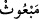
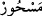
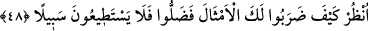

zâlimlerin:” konuştukları şeyleri de biliriz. Yâni, biz onların Kur’ân’ı hiç hayrı
olmayan şeylerle karıştırarak dinlediklerini ve kendi aralarında konuştuklarını biliriz.
Âyette “onlar” anlamında “hüm” zamirinin yerine, zamirle işâret etmek yeterli iken
“zâlimûn” kelimesi kullanılmıştır. Bu kâfirlerin bu sözlerinin zulüm ve haddi aşmak
olduğuna işâret etmek içindir. Burada kâfirlerin gizlice konuştukları şeylerin dinlemek
istedikleri şeyden farklı olduğuna delil vardır. Yâni onlardan her biri diğeriyle
fısıldaşırken: “Siz büyülenmiş bir adamdan başkasına uymuyorsunuz!” dediklerini
çok iyi biliriz.” Yâni onlar aralarında ‘Sihirlenmiş ve aklını yitirmiş bir adama
uyuyorsunuz’ derler. Kâfirlerin zulümlerinden birisi de “__WORD__ meb’ûs” gönderilmiş
peygamber) kelimesi yerine “__WORD__ meshûr” (büyülenmiş) kelimesini kullanmalarıdır.
48. Bak; senin için ne türlü benzetmeler yaptılar! Bu yüzden, (öyle bir) saptılar
ki, artık (doğru) yolu bulamayacaklardır.
“Bak; senin için ne türlü benzetmeler yaptılar!” Yâni seni şair, büyücü, kâhin ve
mecnûna benzettiler. Kâşifî şöyle der: “Senin için misaller getirirler, seni mecnûn,
sihirbaz, kâhin ve şâir diye tavsif ederler.”
“Bu yüzden,” bütün bu benzetmelerinin tamamında asıl yoldan öyle bir “saptılar ki,
artık (doğru) yolu bulamayacaklardır.” Kimsenin kabul edebileceği bir çareleri
kalmamıştır, sözleri birbiriyle çelişmektedir. Ne yapacağını bilmeyen şaşkın kimse gibi
yürürler ve herkesin bâtıl olduğunda şüphe etmeyeceği şeyler öne sürerler. Ya da onlar
haktan ve doğru yoldan saptılar. Ona götüren yolu bulmaya güçleri yetmez. Çünkü onlar
sapıklıkta ve inkârda çok ileri gittiler.
Onlar hevâlarına kulak veriyorlardı. Hurâfe, sihir ve şiir dinliyorlardı. Eğer Allah’a
kulak verselerdi Allah’ın kelâmını ve sıfatlarını dinlerlerdi de mîzaçlarında bir
değişiklik olur, kalplerinde hastalık olmazdı. Bir ve tek olan Allah’ın birliğinden ve tek
olmasından bahsedildiği zaman bundan nefret ediyorlardı. Tevhîdin tadını almıyorlar,
aksine mîzaçlarının kötülüğü sebebiyle tevhîdi acı buluyorlardı.
Her asırda hevâ ehlinin Allah Teâlâ’nın kelâmından yüz çevirip masallar ve hurâfeler
dinlemeye yönelmesi de bu kabildendir. Onlar Allah kelâmını dinlemedikleri gibi
aksine onların çoğunluğu sadece dünyevî meselelerde konuşmayı, geleneksel meseleleri
tartışmayı, insanların namuslarını çiğnemeyi, vesvese veren şeytanın vesveselerine
uymayı, iyiliği emreden ve kötülüğü yasaklayan ehl-i hakkı tenkid etmeyi severler.
Tevrât’ta vârid olduğunu göre Allah Teâlâ şöyle demiştir: “Ey kulum, benden utanmaz
mısın? Yolda yürürken sana kardeşlerinden birinden bir mektup geldiğinde mektubu
okumak için yolun kenarına çekilir, onun için oturursun. Mektubu okur, hiçbir şeyi
kaçırmamak için harf harf üzerinde düşünürsün. İşte bu da benim kitâbım. Onu sana